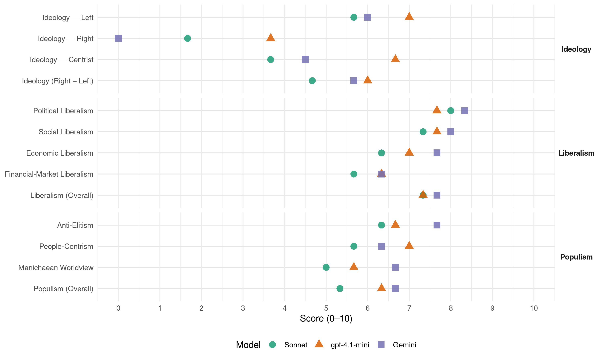

E14-PM (Hungary, 2014)
manifesto_id 86340_201404
Get full text: This site shows derived annotations and short verbatim quotes only. The full manifesto text is © Manifesto Project / WZB — obtain it via manifesto-project.wzb.eu using the manifesto_id above.
Headline scores
| Dimension | Sonnet | gpt-4.1-mini | Gemini |
|---|---|---|---|
| Populism (Overall) | 5.3 | 6.3 | 6.7 |
| Anti-Elitism | 6.3 | 6.7 | 7.7 |
| People-Centrism | 5.7 | 7.0 | 6.3 |
| Manichaean Worldview | 5.0 | 5.7 | 6.7 |
| Ideology (Right − Left) | 4.7 | 6.0 | 5.7 |
| Liberalism (Overall) | 7.3 | 7.3 | 7.7 |
| Political Liberalism | 8.0 | 7.7 | 8.3 |
| Social Liberalism | 7.3 | 7.7 | 8.0 |
| Economic Liberalism | 6.3 | 7.0 | 7.7 |
| Financial-Market Liberalism | 5.7 | 6.3 | 6.3 |
Evidence per dimension
Economic Liberalism
Gemini · score 8.0 · verified · chunk 1
“magántulajdon meghatározó súlyán alapuló gazdasági”
területekről, ahol semmi keresnivalója, és hiszünk a magántulajdon meghatározó súlyán alapuló gazdasági modellben.
Gemini · score 8.0 · verified · chunk 2
“kiszámítható és tisztességes világot ajánl a vállalkozásoknak”
…tisztességes vállalkozások zaklatása is. Az Együtt–PM szövetség kiszámítható és tisztességes világot ajánl a vállalkozásoknak. Olyat, amelyben tudható, hogyan változnak…
Gemini · score 7.0 · verified · chunk 3
“kiszámítható üzleti környezet megteremtése szempontjából”
napos felkészülési időt. Ez a módosítás jelentős javulást eredményez majd a kiszámítható üzleti környezet megteremtése szempontjából. Átlátható, kiszámítható költségvetési politikát
gpt-4.1-mini · score 7.0 · verified · chunk 1
“a magántulajdon meghatározó súlyán alapuló gazdasági modellben”
Erősítjük az állam fogyasztóvédő és piacszabályozó szerepét ott, ahol ez az ország hosszú távú érdeke, fellépünk a monopóliumok ellen, de visszavonjuk az államot azokról a területekről, ahol semmi keresnivalója, és hiszünk a magántulajdon meghatározó súlyán alapuló gazdasági modellben.
gpt-4.1-mini · score 7.0 · verified · chunk 2
“Igazságos adórendszer: olyan adórendszert alakítunk ki”
Igazságos adórendszer: olyan adórendszert alakítunk ki, amely az átlagbérnél és az alatt érdemben növeli a törekvő emberek jövedelmét, miközben arányos, de mértéktartó szolidaritást vár el a legjobban keresőktől.
gpt-4.1-mini · score 7.0 · verified · chunk 3
“Igazságosabbá tesszük a családi adókedvezményt, a gyerekvállalás terheit enyhítjük az adórendszeren keresztül is”
…lehetővé tesszük a gyed igénybevételét. Igazságosabbá tesszük a családi adókedvezményt, a gyerekvállalás terheit enyhítjük az adórendszeren keresztül is, de ügyelünk arra, hogy ne csak a vagyonosabbak kapjanak többet a közösből. Felemeljük a 6 éve változatlan összegű családi pótlékot és a gyest, valamint bevezetjük az évenkénti indexálást…
Sonnet · score 6.0 · verified · chunk 1
“fellépünk a monopóliumok ellen”
Erősítjük az állam fogyasztóvédő és piacszabályozó szerepét ott, ahol ez az ország hosszú távú érdeke, fellépünk a monopóliumok ellen, de visszavonjuk az államot azokról a területekről, ahol semmi keresnivalója
Sonnet · score 7.0 · verified · chunk 2
“kiszámítható üzleti környezetet teremtünk”
KISZÁMÍTHATÓ ÜZLETI KÖRNYEZETET TEREMTÜNK! Adóalkotmányt vezetünk be, az adótörvények módosítása évi egy alkalommal lesz lehetséges
Sonnet · score 6.0 · verified · chunk 3
“A szolgáltatók közötti verseny élénkítése”
A szolgáltatók közötti verseny élénkítése és a költségek csökkentése érdekében átjárhatóbbá tesszük a különböző megtakarítási formákat.
Financial-Market Liberalism
Gemini · score 7.0 · verified · chunk 1
“kereskedelmi bankok által alkalmazott legszigorúbb”
közvetlen állami hitelnyújtás esetén lehetővé tesszük a kereskedelmi bankok által alkalmazott legszigorúbb fizetési biztosítékok
Gemini · score 7.0 · verified · chunk 2
“fokozatosan európai szintre csökkentjük a bankokra kirótt különadót”
…hitelprogramokat indítunk, amelyek a fejlődő kis-és közepes vállalkozásoknak is lehetőséget adnak a banki forrásokhoz történő hozzájutásra. A növekedést és foglalkoztatást segítő hitelezés bővítéséért cserébe, fokozatosan európai szintre csökkentjük a bankokra kirótt különadót, mert az elmúlt években a hitelszűkébe…
Gemini · score 5.0 · verified · chunk 3
“szolgáltatók közötti verseny élénkítése és”
munkáltatói nyugdíjcélú támogatásokat. A szolgáltatók közötti verseny élénkítése és a költségek csökkentése érdekében átjárhatóbbá tesszük
gpt-4.1-mini · score 6.0 · verified · chunk 1
“a bank szektor által fizetendő különadó mértékét”
A növekedést és a foglalkoztatást segítő beruházások bővítéséért cserébe fokozatosan európai szintre csökkentjük az energia- és az infokommunikációs, valamint a bank szektor által fizetendő különadó mértékét.
gpt-4.1-mini · score 7.0 · verified · chunk 2
“Támogatjuk a fejlődő magyar vállalatok életciklusához igazodó szolgáltatásokat”
Támogatjuk a fejlődő magyar vállalatok életciklusához igazodó szolgáltatások – magvető finanszírozás, exportösztönzés, menedzsment-tanácsadás – nyújtását.
gpt-4.1-mini · score 6.0 · verified · chunk 3
“Újra bevezetjük azt a rendszert, amely lehetővé teszi, hogy aki munkanélkülivé válik, annak a törlesztőrészlete két évig 10 ezer forintra csökkenjen”
…MEGOLDÁSOKAT KÍNÁLUNK A DEVIZAADÓSOK MEGSEGÍTÉSÉRE! A jó gazdaságpolitika révén visszatérő bizalom erősebbé teszi a forintot, csökkenti a kamatot és a törlesztőrészleteket. Ez a legolcsóbb és leghatékonyabb eszköz a devizahiteles probléma kezelésére. Új, hosszú távú megállapodást kötünk a bankokkal… Újra bevezetjük azt a rendszert, amely lehetővé teszi, hogy aki munkanélkülivé válik, annak a törlesztőrészlete két évig 10 ezer forintra csökkenjen…
Sonnet · score 5.0 · verified · chunk 1
“bank szektor által fizetendő különadó mértékét”
A növekedést és a foglalkoztatást segítő beruházások bővítéséért cserébe fokozatosan európai szintre csökkentjük az energia- és az infokommunikációs, valamint a bank szektor által fizetendő különadó mértékét.
Sonnet · score 7.0 · verified · chunk 2
“fokozatosan európai szintre csökkentjük a bankokra kirótt különadót”
A növekedést és foglalkoztatást segítő hitelezés bővítéséért cserébe, fokozatosan európai szintre csökkentjük a bankokra kirótt különadót, mert az elmúlt években a hitelszűkébe került magyar vállalkozások voltak az igazi kárvallottjai a bankok túladóztatásának.
Sonnet · score 5.0 · verified · chunk 3
“nagy pénzügyi intézmények spekulatív tőkemozgásait”
Az állampolgárok létszükségleteit biztosító tranzakciók helyett a nagy pénzügyi intézmények spekulatív tőkemozgásait kell bevonni a közteherviselés alá, ezért elkötelezettek vagyunk az európai szintű pénzügyi tranzakciós adó bevezetése mellett.
Political Liberalism
Gemini · score 9.0 · verified · chunk 1
“jogállamiságunk végleges leépülését, gazdaságunk lezüllését”
olyan rendszernek ágyaztak meg, amely fenyegető jövőképet fest fel: jogállamiságunk végleges leépülését, gazdaságunk lezüllését
Gemini · score 8.0 · verified · chunk 2
“A parlamenti képviselet demokratizálása és a jó kormányzás”
…bíróságok hatáskörébe helyezzük át. ELŐSEGÍTJÜK A NŐK RÉSZVÉTELÉT A KÖZÉLET MINDEN TERÜLETÉN! A parlamenti képviselet demokratizálása és a jó kormányzás feltételeinek megteremtése érdekében célul tűzzük…
Gemini · score 8.0 · verified · chunk 3
“megerősítjük a demokrácia és alapjogok”
pénzügyi tranzakciós adó bevezetése mellett. MEGERŐSÍTJÜK A DEMOKRÁCIA ÉS ALAPJOGOK EURÓPAI UNIÓS VÉDELMÉT! Meg kell
gpt-4.1-mini · score 8.0 · verified · chunk 1
“helyreállítjuk az alapvető jogok védelmét, a magántulajdon szentségét”
Ezért a kormányváltást követően olyan politikai intézményrendszert építünk fel, amely a hatalom önkényét fékezi, ellensúlyozza, annak korlátokat szab. Helyreállítjuk az alapvető jogok védelmét, a magántulajdon szentségét.
gpt-4.1-mini · score 8.0 · verified · chunk 2
“A parlamenti képviselet demokratizálása és a jó kormányzás feltételeinek megteremtése”
A parlamenti képviselet demokratizálása és a jó kormányzás feltételeinek megteremtése érdekében célul tűzzük ki, hogy a parlamentben a nők aránya elérje a minimálisan elégséges egyharmados arányt.
gpt-4.1-mini · score 7.0 · verified · chunk 3
“Megerősítjük a demokrácia és alapjogok európai uniós védelmét!”
…VISSZAÁLLÍTJUK A MAGYAR KÜLPOLITIKA HITELESSÉGÉT! A nemzetközi kapcsolatok irányítását visszahelyezzük a Külügyminisztériumhoz és a diplomáciai szakapparátushoz… Megerősítjük a demokrácia és alapjogok európai uniós védelmét! Meg kell erősítenünk az Alapjogi Chartát és aktívan segítenünk az olyan mechanizmusok létrejöttét…
Sonnet · score 8.0 · verified · chunk 1
“helyreállítjuk a jogállamiságot és az alapvető jogok tiszteletét”
Fékek és ellensúlyok visszaállítása: helyreállítjuk a jogállamiságot és az alapvető jogok tiszteletét, kiterjesztjük a népszavazás és a népi kezdeményezés jogintézményeit
Sonnet · score 8.0 · verified · chunk 2
“a parlamenti képviselet demokratizálása”
A parlamenti képviselet demokratizálása és a jó kormányzás feltételeinek megteremtése érdekében célul tűzzük ki, hogy a parlamentben a nők aránya elérje a minimálisan elégséges egyharmados arányt.
Sonnet · score 8.0 · verified · chunk 3
“Megszüntetjük a pártpolitikai befolyást a rendőrség”
Megszüntetjük a pártpolitikai befolyást a rendőrség és a nemzetbiztonsági szolgálatok működésében.
Liberalism (Overall)
Gemini · score 8.0 · verified · chunk 1
“joguralom, a kiszámíthatóság, az alapvető”
Az állam működését a joguralom, a kiszámíthatóság, az alapvető szabadságjogok tisztelete és hatalommegosztás
Gemini · score 8.0 · verified · chunk 2
“kiszámítható és tisztességes világot ajánl a vállalkozásoknak”
…tisztességes vállalkozások zaklatása is. Az Együtt–PM szövetség kiszámítható és tisztességes világot ajánl a vállalkozásoknak. Olyat, amelyben tudható, hogyan változnak…
Gemini · score 7.0 · verified · chunk 3
“megerősítjük a demokrácia és alapjogok”
pénzügyi tranzakciós adó bevezetése mellett. MEGERŐSÍTJÜK A DEMOKRÁCIA ÉS ALAPJOGOK EURÓPAI UNIÓS VÉDELMÉT! Meg kell
gpt-4.1-mini · score 7.0 · verified · chunk 1
“helyreállítjuk az alapvető jogok védelmét, a magántulajdon szentségét”
Ezért a kormányváltást követően olyan politikai intézményrendszert építünk fel, amely a hatalom önkényét fékezi, ellensúlyozza, annak korlátokat szab. Helyreállítjuk az alapvető jogok védelmét, a magántulajdon szentségét.
gpt-4.1-mini · score 8.0 · verified · chunk 2
“Igazságos adórendszer: olyan adórendszert alakítunk ki”
Igazságos adórendszer: olyan adórendszert alakítunk ki, amely az átlagbérnél és az alatt érdemben növeli a törekvő emberek jövedelmét, miközben arányos, de mértéktartó szolidaritást vár el a legjobban keresőktől.
gpt-4.1-mini · score 7.0 · verified · chunk 3
“Megerősítjük a demokrácia és alapjogok európai uniós védelmét!”
…VISSZAÁLLÍTJUK A MAGYAR KÜLPOLITIKA HITELESSÉGÉT! A nemzetközi kapcsolatok irányítását visszahelyezzük a Külügyminisztériumhoz és a diplomáciai szakapparátushoz… Megerősítjük a demokrácia és alapjogok európai uniós védelmét! Meg kell erősítenünk az Alapjogi Chartát és aktívan segítenünk az olyan mechanizmusok létrejöttét…
Sonnet · score 7.0 · verified · chunk 1
“visszaépítjük a hazánkkal szembeni bizalmat”
visszaépítjük a hazánkkal szembeni bizalmat, illetve a magyarok jövőbe vetett hitét; elsősorban a jogállam újjáépítésével, kiszámítható gazdaságpolitikával
Sonnet · score 8.0 · verified · chunk 2
“visszaállítjuk a szabad tankönyv-, továbbképzési és szakmai szolgáltatási piacot”
Helyreállítjuk a szabad tankönyv-, továbbképzési és szakmai szolgáltatási piacot, mert az itt megvalósított állami szerepvállalás növelése értelmetlen, káros és munkahelyellenes.
Sonnet · score 7.0 · verified · chunk 3
“visszaállítjuk a független Költségvetési Tanácsot”
visszaállítjuk a Fidesz által szinte névlegessé tett, szakapparátusától megfosztott független Költségvetési Tanácsot, a parlamentarizmussal összhangban a költségvetés és a költségvetési hatással rendelkező egyéb törvények esetében jogot biztosítunk a Tanácsnak.
Anti-Elitism
Gemini · score 8.0 · verified · chunk 1
“Az orbánizmus felszámolását, de az orbánizmust”
szigorúbb elszámoltatását. Az orbánizmus felszámolását, de az orbánizmust hatalomra juttató hibák felszámolását
Gemini · score 8.0 · verified · chunk 2
“Orbán Viktor cinikusan beígért egymillió új munkahelyet”
…siralmas és drámai következményekkel járó is. Orbán Viktor cinikusan beígért egymillió új munkahelyet és veszélybe sodort több százezret, miközben…
Gemini · score 7.0 · verified · chunk 3
“megszüntetjük a politikusokat védő luxusrendőrségeket”
új demokratikus jogállam közbiztonsági és honvédelmi feladatainak végrehajtásához. Megszüntetjük a politikusokat védő luxusrendőrségeket (TEK, Parlamenti Őrség), ezeket a forrásokat
gpt-4.1-mini · score 7.0 · verified · chunk 1
“a hatalmi önérdek gátlástalan érvényesítése”
Az elmúlt évtized megosztó politikája, a hatalmi önérdek gátlástalan érvényesítése és az ebből fakadó kormányzati tévelygések olyan rendszernek ágyaztak meg, amely fenyegető jövőképet fest fel egyre többünk előtt
gpt-4.1-mini · score 6.0 · verified · chunk 2
“Orbán Viktor cinikusan beígért egymillió új munkahelyet”
Orbán Viktor cinikusan beígért egymillió új munkahelyet és veszélybe sodort több százezret, miközben közmunkának hazudja és tartósítja a munkanélküliséget.
gpt-4.1-mini · score 7.0 · verified · chunk 3
“Az Orbán-rezsim – ahelyett, hogy a világgazdasági válság után amúgy is megrendült biztonságunkat helyreállította volna – soha nem látott szintű bizonytalanságok terepévé tette mindannyiunk hétköznapjait.”
…biztonságod javítása érdekében megszüntetjük a brutális forráskivonásokat és az ésszerűtlen szervezeti átalakításokat. Az Orbán-rezsim – ahelyett, hogy a világgazdasági válság után amúgy is megrendült biztonságunkat helyreállította volna – soha nem látott szintű bizonytalanságok terepévé tette mindannyiunk hétköznapjait. Ha orvoshoz mész, ha rendőrt hívsz, ha baj ér a munkádban vagy az életed bármely területén, ma kevésbé számíthatsz az állam kiszámítható és korrekt színvonalú segítségére, mint bármikor korábban…
Sonnet · score 6.0 · verified · chunk 1
“az Orbán-rezsim csigolyánként törte el demokráciánk gerincét”
Hazánk, amely – új demokráciánk minden gyerekbetegsége ellenére is – két évtizeden át jogállam volt… az Orbán-rezsim csigolyánként törte el demokráciánk gerincét és kifordította önmagából Magyarországot.
Sonnet · score 7.0 · verified · chunk 2
“Orbán Viktor cinikusan beígért egymillió új munkahelyet”
Orbán Viktor cinikusan beígért egymillió új munkahelyet és veszélybe sodort több százezret, miközben közmunkának hazudja és tartósítja a munkanélküliséget. Ez nem egyszerű felelőtlenség, ez bűn.
Sonnet · score 6.0 · verified · chunk 3
“Az Orbán-rezsim – ahelyett, hogy a világgazdasági válság után”
Az Orbán-rezsim – ahelyett, hogy a világgazdasági válság után amúgy is megrendült biztonságunkat helyreállította volna – soha nem látott szintű bizonytalanságok terepévé tette mindannyiunk hétköznapjait.
Ideology — Centrist
Gemini · score 5.0 · verified · chunk 1
“törekvő polgárok békés, gyarapodó országává”
új korszakban a törekvő polgárok békés, gyarapodó országává válhasson. A lehetőségek országává.
Gemini · score 4.0 · verified · chunk 3
“választóink számára kiszámítható, elszámoltatható politizálást”
részletes, költségekre lefordítható tervezése nélkül. Választóink számára kiszámítható, elszámoltatható politizálást ígérünk. Másik prioritásunk, hogy az
gpt-4.1-mini · score 8.0 · verified · chunk 1
“nem a szembenállásra, hanem újra a nemzeti közös nevezőkre alapozza programját”
Szükség van arra, hogy a magyar politikában ismét legyen egy, a hivatását szakértelemmel és alázattal végző pártszövetség, amely – közel negyedszázaddal a rendszerváltozás után – végre nem a szembenállásra, hanem újra a nemzeti közös nevezőkre alapozza programját.
gpt-4.1-mini · score 6.0 · verified · chunk 2
“A mi politikánk középpontjában Te állsz: a törekvő polgár!”
A mi politikánk középpontjában Te állsz: a törekvő polgár! Te, aki minden tőled telhetőt megteszel azért, hogy egyről a kettőre juss az életben: tanulsz, tanítasz, munkát keresel és dolgozol, anyagi lehetőségeidhez mérten élsz az öngondoskodás különböző formáival – felelősséggel készülsz a jövőre.
gpt-4.1-mini · score 6.0 · verified · chunk 3
“Nem hagyjuk! Neked és nekünk Európa a közös otthonunk és szabadságunk záloga”
…Magyarország külkapcsolataiban azonnali váltásra van szükség, ha nem akarunk belenyugodni abba, hogy országunk fokozatosan elszigetelődik, és végül kívül rekedünk a békében gyarapodó országok közösségén. Nem hagyjuk! Neked és nekünk Európa a közös otthonunk és szabadságunk záloga: – évezredes hagyaték…
Sonnet · score 5.0 · verified · chunk 1
“nem a szembenállásra, hanem újra a nemzeti közös nevezőkre”
végre nem a szembenállásra, hanem újra a nemzeti közös nevezőkre alapozza programját. Ezért hoztuk létre az Együtt 2014–Párbeszéd Magyarországért szövetséget.
Sonnet · score 3.0 · verified · chunk 2
“Az Együtt–PM szövetség kiszámítható és tisztességes világot ajánl”
Az Együtt–PM szövetség kiszámítható és tisztességes világot ajánl a vállalkozásoknak. Olyat, amelyben tudható, hogyan változnak a szabályok
Sonnet · score 3.0 · verified · chunk 3
“Választóink számára kiszámítható, elszámoltatható politizálást ígérünk”
Választóink számára kiszámítható, elszámoltatható politizálást ígérünk. Másik prioritásunk, hogy az üres lózungok helyett minél konkrétabb intézkedéseket vázoljunk fel.
Ideology — Left
Gemini · score 6.0 · verified · chunk 1
“káros és elhibázott egykulcsos adó megszüntetésével”
új társadalmi szerződés lehetőségét kínálja – mindenekelőtt a káros és elhibázott egykulcsos adó megszüntetésével.
Gemini · score 6.0 · verified · chunk 2
“Igazságos adórendszer: olyan adórendszert alakítunk ki”
…MUNKÁD A JÓ KORMÁNYZZÁS EREDMÉNYEKÉNT 220 EZER ÚJJ MUNKAHELYET HOZUNK LÉTRE Igazságos adórendszer: olyan adórendszert alakítunk ki, amely az átlagbérnél és az alatt…
Gemini · score 6.0 · verified · chunk 3
“spekulatív tőkemozgásait kell bevonni a”
biztosító tranzakciók helyett a nagy pénzügyi intézmények spekulatív tőkemozgásait kell bevonni a közteherviselés alá, ezért elkötelezettek vagyunk
gpt-4.1-mini · score 7.0 · verified · chunk 1
“igazságosabb, kétkulcsos adót és munkahelyteremtő adórendszert”
Az Együtt–PM Szövetség igazságosabb, kétkulcsos adót és munkahelyteremtő adórendszert ajánl Magyarországnak.
gpt-4.1-mini · score 7.0 · verified · chunk 2
“Igazságos adórendszer: olyan adórendszert alakítunk ki”
Igazságos adórendszer: olyan adórendszert alakítunk ki, amely az átlagbérnél és az alatt érdemben növeli a törekvő emberek jövedelmét, miközben arányos, de mértéktartó szolidaritást vár el a legjobban keresőktől.
gpt-4.1-mini · score 7.0 · verified · chunk 3
“A szegénység a rendszerváltás óta a legmagasabb szintre ért, 4 millióan élnek szegénységben, és egyre több kisgyermek rendszeresen éhezik.”
…A legszegényebbek ma lényegében semmilyen ellátásban, segítségben nem részesülnek, csak kirekesztésben. A szegénység a rendszerváltás óta a legmagasabb szintre ért, 4 millióan élnek szegénységben, és egyre több kisgyermek rendszeresen éhezik. Romlik a közbiztonság…
Sonnet · score 5.0 · verified · chunk 1
“igazságos tehermegosztást ígérünk a nemzedékek között”
Igazságos tehermegosztást ígérünk a nemzedékek között is: a fenntarthatóságra, felelős gazdálkodásra, csökkenő adósságpályára épülő politikánkkal.
Sonnet · score 6.0 · verified · chunk 2
“igazságos, adójóváírással kiegészített kétkulcsos személyi jövedelemadót”
az Együtt–PM Szövetség igazságos, adójóváírással kiegészített kétkulcsos személyi jövedelemadót és munkabarát adórendszert ajánl Magyarországnak
Sonnet · score 6.0 · verified · chunk 3
“a szegénység a rendszerváltás óta a legmagasabb szintre ért”
A szegénység a rendszerváltás óta a legmagasabb szintre ért, 4 millióan élnek szegénységben, és egyre több kisgyermek rendszeresen éhezik.
Ideology (Right − Left)
Gemini · score 6.0 · verified · chunk 1
“a törekvő polgárok közösségének, a magyar”
szükség van egy új erőre, amely a törekvő polgárok közösségének, a magyar középosztálynak a kiszélesítésére
Gemini · score 6.0 · verified · chunk 2
“Igazságos adórendszer: olyan adórendszert alakítunk ki”
…MUNKÁD A JÓ KORMÁNYZZÁS EREDMÉNYEKÉNT 220 EZER ÚJJ MUNKAHELYET HOZUNK LÉTRE Igazságos adórendszer: olyan adórendszert alakítunk ki, amely az átlagbérnél és az alatt…
Gemini · score 5.0 · verified · chunk 3
“spekulatív tőkemozgásait kell bevonni a”
biztosító tranzakciók helyett a nagy pénzügyi intézmények spekulatív tőkemozgásait kell bevonni a közteherviselés alá, ezért elkötelezettek vagyunk
gpt-4.1-mini · score 6.0 · verified · chunk 1
“a hatalmi önérdek gátlástalan érvényesítése”
Az elmúlt évtized megosztó politikája, a hatalmi önérdek gátlástalan érvényesítése és az ebből fakadó kormányzati tévelygések olyan rendszernek ágyaztak meg, amely fenyegető jövőképet fest fel egyre többünk előtt
gpt-4.1-mini · score 6.0 · verified · chunk 2
“Orbán Viktor cinikusan beígért egymillió új munkahelyet”
Orbán Viktor cinikusan beígért egymillió új munkahelyet és veszélybe sodort több százezret, miközben közmunkának hazudja és tartósítja a munkanélküliséget.
gpt-4.1-mini · score 6.0 · verified · chunk 3
“Az Orbán-rezsim – ahelyett, hogy a világgazdasági válság után amúgy is megrendült biztonságunkat helyreállította volna – soha nem látott szintű bizonytalanságok terepévé tette mindannyiunk hétköznapjait.”
…biztonságod javítása érdekében megszüntetjük a brutális forráskivonásokat és az ésszerűtlen szervezeti átalakításokat. Az Orbán-rezsim – ahelyett, hogy a világgazdasági válság után amúgy is megrendült biztonságunkat helyreállította volna – soha nem látott szintű bizonytalanságok terepévé tette mindannyiunk hétköznapjait. Ha orvoshoz mész, ha rendőrt hívsz…
Sonnet · score 4.0 · verified · chunk 1
“szolidáris piacgazdaság megteremtésére”
Szükség lett volna – és az Együtt–PM szerint ma is szükség van – egy köztes fokozatra: a szolidáris piacgazdaság megteremtésére.
Sonnet · score 5.0 · verified · chunk 2
“igazságos adórendszer”
Igazságos adórendszer: olyan adórendszert alakítunk ki, amely az átlagbérnél és az alatt érdemben növeli a törekvő emberek jövedelmét
Sonnet · score 5.0 · verified · chunk 3
“csapnivaló gazdaságpolitikának köszönhetően devizahitelesek százezrei”
A csapnivaló gazdaságpolitikának köszönhetően devizahitelesek százezrei vannak ma bajban, miközben tombol a rezsihazugság, tízezreknek nem jut fűtésre.
Ideology — Right
Gemini · score 0.0 · verified · chunk 3
“legális migrációt ösztönözzük, miközben hatékonyan”
arra törekszünk, hogy az Európába irányuló legális migrációt ösztönözzük, miközben hatékonyan lépjünk fel az illegális migráció ellen.
gpt-4.1-mini · score 3.0 · verified · chunk 1
“nem mások ellenében akarunk magyarok lenni”
Mi nem mások ellenében akarunk magyarok lenni, hanem mások kultúrájára és hagyományaira nyitottan, egymással és a szomszédainkkal is békében együtt élve.
gpt-4.1-mini · score 3.0 · verified · chunk 2
“A bankok ellenségek lettek, amelyeket legyőzni, a végtelenségig adóztatni”
A bankok ellenségek lettek, amelyeket legyőzni, a végtelenségig adóztatni, sőt lehetőleg elüldözni kell. Válaszul évekre befagyott a hitelezés, azok a sikeres cégek sem jutottak friss forráshoz, amelyek működésüket bővíteni akarták, beruháztak volna, és új munkahelyeket akartak teremteni.
gpt-4.1-mini · score 5.0 · verified · chunk 3
“A hajléktalanokat bűnözőknek tekintik és a kamaszgyerekeket büntetőjogi eszközökkel kezelnek.”
…Ellehetetlenítették a devizahiteleseket. Meggyengült a forint az euróval és a svájci frankkal szemben, így több százezer devizahiteles küzd még nagyobb törlesztőrészletekkel, de a kedvezményes végtörlesztéssel csak azoknak dobtak mentőövet, akik arra nem szorultak rá… A hajléktalanokat bűnözőknek tekintik és a kamaszgyerekeket büntetőjogi eszközökkel kezelnek. A hajléktalanokat segítségnyújtás helyett üldözik…
Sonnet · score 2.0 · verified · chunk 1
“Kelet helyett Nyugatra tekintünk”
Kelet helyett Nyugatra tekintünk, a sikeres és szerencsésebb európai nemzetekhez akarunk felzárkózni. Magyarország helye nem a periférián, hanem a centrumban van.
Sonnet · score 1.0 · verified · chunk 2
“ne kelljen elmenekülniük Magyarországról”
hogy ne kelljen elmenekülniük Magyarországról, ha jövőt keresnek maguknak, vagy hazatelepülhessenek a már elmenekültek százezrei
Sonnet · score 2.0 · verified · chunk 3
“az illegális migráció ellen”
Migrációs politikánkban arra törekszünk, hogy az Európába irányuló legális migrációt ösztönözzük, miközben hatékonyan lépjünk fel az illegális migráció ellen.
Manichaean Worldview
Gemini · score 7.0 · verified · chunk 1
“Orbán-rezsim csigolyánként törte el demokráciánk”
Az elmúlt években az Orbán-rezsim csigolyánként törte el demokráciánk gerincét és kifordította önmagából
Gemini · score 7.0 · verified · chunk 2
“Ez nem egyszerű felelőtlenség, ez bűn”
…miközben közmunkának hazudja és tartósítja a munkanélküliséget. Ez nem egyszerű felelőtlenség, ez bűn. Munkaellenes kormányzás, nyomormélyítő akarnokság, pofátlan…
Gemini · score 6.0 · verified · chunk 3
“Orbán-rezsim – ahelyett, hogy a”
helyi közösségek együttműködésével. Az Orbán-rezsim – ahelyett, hogy a világgazdasági válság után amúgy is
gpt-4.1-mini · score 6.0 · verified · chunk 1
“Orbán-rezsim felszámolását”
A korrupció visszaszorítását, a közpénzek elköltésének szigorúbb ellenőrzését és a közhatalmat gyakorlók szigorúbb elszámoltatását. Az orbánizmus felszámolását, de az orbánizmust hatalomra juttató hibák felszámolását is egyszersmind!
gpt-4.1-mini · score 5.0 · verified · chunk 2
“Ez nem egyszerű felelőtlenség, ez bűn. Munkaellenes kormányzás”
Orbán Viktor cinikusan beígért egymillió új munkahelyet és veszélybe sodort több százezret, miközben közmunkának hazudja és tartósítja a munkanélküliséget. Ez nem egyszerű felelőtlenség, ez bűn. Munkaellenes kormányzás, nyomormélyítő akarnokság, pofátlan hazudozás.
gpt-4.1-mini · score 6.0 · verified · chunk 3
“Amikor az Orbán-rezsim Magyarország szövetségeseivel, köztük az Európai Unióval szemben indít háborút, akkor valójában nem a mi szabadságunkért harcol, hanem a saját hatalmáért küzd a Te szabadságod ellen is.”
…Ez a Te hazád, melynek egész kultúrája, történelme és gazdasága európai. Amikor az Orbán-rezsim Magyarország szövetségeseivel, köztük az Európai Unióval szemben indít háborút, akkor valójában nem a mi szabadságunkért harcol, hanem a saját hatalmáért küzd a Te szabadságod ellen is. Magyarország külkapcsolataiban azonnali váltásra van szükség…
Sonnet · score 4.0 · verified · chunk 1
“Orbán Viktor cinikusan beígért egymillió új munkahelyet”
Orbán Viktor cinikusan beígért egymillió új munkahelyet és veszélybe sodort több százezret… Ez nem egyszerű felelőtlenség, ez bűn.
Sonnet · score 6.0 · verified · chunk 2
“Munkaellenes kormányzás, nyomormélyítő akarnokság, pofátlan hazudozás”
Ez nem egyszerű felelőtlenség, ez bűn. Munkaellenes kormányzás, nyomormélyítő akarnokság, pofátlan hazudozás. Egy felelős kormányzásra készülő párt nem ígérhet e téren megváltást varázsütésre.
Sonnet · score 5.0 · verified · chunk 3
“Orbán a nemzeti érdek helyett saját magánérdekeit védi”
A retorikai szabadságharc a nemzeti érdekek valódi képviseletét akadályozza, Orbán a nemzeti érdek helyett saját magánérdekeit védi.
People-Centrism
Gemini · score 7.0 · verified · chunk 1
“a törekvő polgárok közösségének, a magyar”
szükség van egy új erőre, amely a törekvő polgárok közösségének, a magyar középosztálynak a kiszélesítésére
Gemini · score 7.0 · verified · chunk 2
“A mi politikánk középpontjában Te állsz”
…már elmenekültek százezrei. A mi politikánk középpontjában Te állsz: a törekvő polgár! Te, aki…
Gemini · score 5.0 · verified · chunk 3
“Együtt–PM közösen Veled újraköti”
hajléktalanokat bűnözőknek tekintik. Az Együtt–PM közösen Veled újraköti a meglazult szolidaritási hálót. Segítséget
gpt-4.1-mini · score 8.0 · verified · chunk 1
“a törekvő polgárok közösségének”
Szükség van arra, hogy a magyar politikában ismét legyen egy, a hivatását szakértelemmel és alázattal végző pártszövetség, amely – közel negyedszázaddal a rendszerváltozás után – végre nem a szembenállásra, hanem újra a nemzeti közös nevezőkre alapozza programját. Ezért hoztuk létre az Együtt 2014–Párbeszéd Magyarországért szövetséget.
gpt-4.1-mini · score 7.0 · verified · chunk 2
“A mi politikánk középpontjában Te állsz: a törekvő polgár!”
A mi politikánk középpontjában Te állsz: a törekvő polgár! Te, aki minden tőled telhetőt megteszel azért, hogy egyről a kettőre juss az életben: tanulsz, tanítasz, munkát keresel és dolgozol, anyagi lehetőségeidhez mérten élsz az öngondoskodás különböző formáival – felelősséggel készülsz a jövőre.
gpt-4.1-mini · score 6.0 · verified · chunk 3
“Ez a Te hazád, melynek egész kultúrája, történelme és gazdasága európai.”
…határon túli magyarok választójoga: a rendszert úgy alakítjuk át, hogy a magyar pártlisták helyett a határon túli magyarok saját jelöltjeik közül választhassanak képviselőt. Ez a Te hazád, melynek egész kultúrája, történelme és gazdasága európai. Amikor az Orbán-rezsim Magyarország szövetségeseivel, köztük az Európai Unióval szemben indít háborút, akkor valójában nem a mi szabadságunkért harcol…
Sonnet · score 6.0 · verified · chunk 1
“Politikánk hősei a törekvő polgárok”
Politikánk hősei a törekvő polgárok: azok, akik minden tőlük telhetőt elkövetnek azért, hogy az életben egyről a kettőre jussanak
Sonnet · score 6.0 · verified · chunk 2
“A mi politikánk középpontjában Te állsz”
A mi politikánk középpontjában Te állsz: a törekvő polgár! Te, aki minden tőled telhetőt megteszel azért, hogy egyről a kettőre juss az életben
Sonnet · score 5.0 · verified · chunk 3
“Senki sem maradhat az út szélén”
Senki sem maradhat az út szélén: fokozatosan bevezetjük az együttműködési támogatás rendszerét, amely biztosítja, hogy mindenki, aki ki akar törni a mélyszegénységből, támogatást kapjon ehhez.
Populism (Overall)
Gemini · score 7.0 · verified · chunk 1
“Az Orbán-rezsim felszámolása után új”
okozott az országnak és a nemzetnek. Az Orbán-rezsim felszámolása után új kiegyezést hirdetünk
Gemini · score 7.0 · verified · chunk 2
“Ez nem egyszerű felelőtlenség, ez bűn”
…miközben közmunkának hazudja és tartósítja a munkanélküliséget. Ez nem egyszerű felelőtlenség, ez bűn. Munkaellenes kormányzás, nyomormélyítő akarnokság, pofátlan…
Gemini · score 6.0 · verified · chunk 3
“megszüntetjük a politikusokat védő luxusrendőrségeket”
új demokratikus jogállam közbiztonsági és honvédelmi feladatainak végrehajtásához. Megszüntetjük a politikusokat védő luxusrendőrségeket (TEK, Parlamenti Őrség), ezeket a forrásokat
gpt-4.1-mini · score 7.0 · verified · chunk 1
“a hatalmi önérdek gátlástalan érvényesítése”
Az elmúlt évtized megosztó politikája, a hatalmi önérdek gátlástalan érvényesítése és az ebből fakadó kormányzati tévelygések olyan rendszernek ágyaztak meg, amely fenyegető jövőképet fest fel egyre többünk előtt
gpt-4.1-mini · score 6.0 · verified · chunk 2
“Orbán Viktor cinikusan beígért egymillió új munkahelyet”
Orbán Viktor cinikusan beígért egymillió új munkahelyet és veszélybe sodort több százezret, miközben közmunkának hazudja és tartósítja a munkanélküliséget.
gpt-4.1-mini · score 6.0 · verified · chunk 3
“Az Orbán-rezsim – ahelyett, hogy a világgazdasági válság után amúgy is megrendült biztonságunkat helyreállította volna – soha nem látott szintű bizonytalanságok terepévé tette mindannyiunk hétköznapjait.”
…biztonságod javítása érdekében megszüntetjük a brutális forráskivonásokat és az ésszerűtlen szervezeti átalakításokat. Az Orbán-rezsim – ahelyett, hogy a világgazdasági válság után amúgy is megrendült biztonságunkat helyreállította volna – soha nem látott szintű bizonytalanságok terepévé tette mindannyiunk hétköznapjait. Ha orvoshoz mész, ha rendőrt hívsz…
Sonnet · score 5.0 · verified · chunk 1
“az orbánizmus hatalomra juttató hibák felszámolását”
A korrupció visszaszorítását… Az orbánizmus felszámolását, de az orbánizmust hatalomra juttató hibák felszámolását is egyszersmind!
Sonnet · score 6.0 · verified · chunk 2
“az Orbán-kormány haverjai érdekében akár teljes iparágakat is képes a földbe döngölni”
az Orbán-kormány haverjai érdekében akár teljes iparágakat is képes a földbe döngölni, ellehetetleníteni, működésüket elbizonytalanítani, hogy azután újraossza a lapokat, a baráti kör tagjait előnyben részesítve.
Sonnet · score 5.0 · verified · chunk 3
“Az Orbán-rezsim… soha nem látott szintű bizonytalanságok”
Az Orbán-rezsim – ahelyett, hogy a világgazdasági válság után amúgy is megrendült biztonságunkat helyreállította volna – soha nem látott szintű bizonytalanságok terepévé tette mindannyiunk hétköznapjait.
Social Liberalism